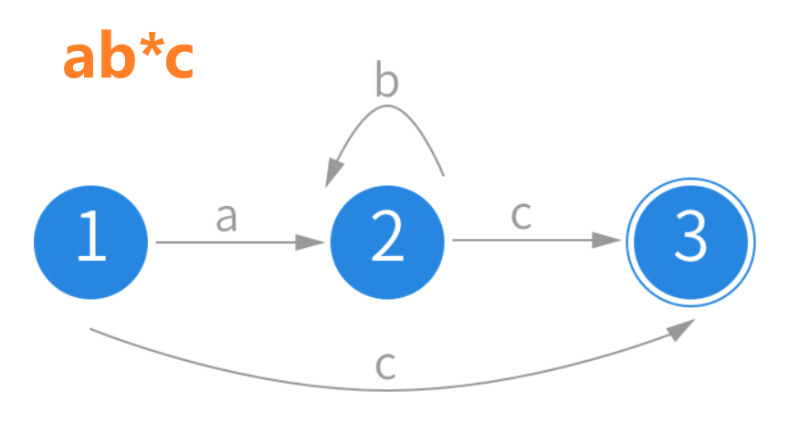

Java 正则表达式
Regular Expressions in Java
掌握文本处理的强大工具什么是正则表达式？
正则表达式（Regular Expression，简称 Regex）是一种强大的文本模式匹配工具，就像是文本世界的"搜索引擎"。
🔍 生活中的类比
想象你在图书馆寻找书籍：
- 普通搜索： "找到书名是《Java编程思想》的书" - 精确匹配
- 正则搜索： "找到所有以'Java'开头，包含'编程'的书" - 模式匹配
正则表达式的核心能力
- 🎯 模式匹配：检查文本是否符合特定模式
- 🔍 文本搜索：在大量文本中快速找到目标
- ✂️ 文本替换：批量替换符合模式的文本
- 📝 数据验证：验证邮箱、电话号码等格式
🔧 什么是有限状态自动机？
有限状态自动机是一个数学模型，由以下组成：
- 状态集合：有限个状态，包括初始状态和接受状态
- 字母表：输入符号的集合
- 转移函数：定义状态间的转移规则
- 初始状态：自动机开始的状态
- 接受状态：表示匹配成功的状态
🎯 正则表达式如何工作
示例：匹配 "ab*c" 的状态机
示例：匹配字符串 "ab*c" 的状态机
S1 --a--> S2 --b--> S2(自循环) --c--> S3(接受状态)工作过程：
- 从初始状态 S1 开始
- 读取字符 'a'，转移到状态 S2
- 读取任意数量的 'b'（可以为 0 个），保持在状态 S2
- 读取字符 'c'，转移到接受状态 S3
- 到达接受状态，匹配成功！
String类的文本处理方法
在学习正则表达式之前，让我们先了解String类中常用的文本处理方法：
🔄 replace() 和 replaceAll()
字符串替换操作
String text = "Hello World, Hello Java";
// replace() - 替换所有匹配的字符序列
String result1 = text.replace("Hello", "Hi");
// 结果: "Hi World, Hi Java"
// replaceAll() - 支持正则表达式的替换
String result2 = text.replaceAll("Hello", "Hi");
// 结果: "Hi World, Hi Java"
// replaceAll() 的正则表达式威力
String phoneText = "电话: 123-456-7890, 手机: 987-654-3210";
String masked = phoneText.replaceAll("\\d{3}-\\d{3}-\\d{4}", "***-***-****");
// 结果: "电话: ***-***-****, 手机: ***-***-****"✂️ split() 方法
字符串分割操作
String data = "apple,banana,orange";
// 简单分割
String[] fruits = data.split(",");
// 结果: ["apple", "banana", "orange"]
// 使用正则表达式分割
String complexData = "apple,banana;orange:grape";
String[] allFruits = complexData.split("[,;:]");
// 结果: ["apple", "banana", "orange", "grape"]
// 处理多个空格
String sentence = "Hello world Java";
String[] words = sentence.split("\\s+");
// 结果: ["Hello", "world", "Java"]String方法的局限性
复杂模式匹配
如何验证邮箱格式？电话号码格式？
// 使用String方法很难实现
String email = "user@example.com";
// 如何验证这是一个有效的邮箱？灵活的文本提取
如何从文本中提取所有的数字？所有的URL？
// String方法无法轻松实现
String text = "价格：￥199.99，折扣：8.5折";
// 如何提取所有数字？正则表达式的优势
正则表达式提供了强大的模式匹配能力，可以轻松解决上述问题：
- 模式匹配：定义复杂的文本模式
- 数据验证：验证邮箱、电话、身份证等格式
- 文本提取：从复杂文本中提取特定信息
- 高效替换：基于模式的智能替换
正则表达式基础语法
正则表达式由普通字符和特殊字符（元字符）组成，就像编程语言的语法一样。
1. 基础字符介绍
| 类别 | 表达方式 | 示例匹配 |
|---|---|---|
| 小写字母 | [a-z] |
a, m, z |
| 大写字母 | [A-Z] |
A, M, Z |
| 数字字符 | [0-9] |
0, 5, 9 |
| 常见标点 | [,.!?;:_@#-] |
., !, -, @, # |
注意：某些符号在正则中具有特殊意义（如 .、*、+），若要匹配它们本身，可放入字符类或使用转义（如 \.）。
2. 特殊含义字符
| 符号 | 含义 | 示例 | 匹配结果 |
|---|---|---|---|
\s |
空白字符 | \s+ |
空格、制表符、换行 |
\d |
数字 [0-9] | \d{2} |
12, 09, 99 |
\w |
字母、数字、下划线 | \w+ |
hello, test_123 |
. |
任意单个字符 | a.c |
abc, a1c, a@c |
\S |
非空白字符 | \S+ |
非空白的连续片段 |
\D |
非数字 | \D+ |
非数字的连续片段 |
\W |
非字母、数字、下划线 | \W+ |
标点或其他符号序列 |
3. 边界规则
| 符号 | 作用 | 示例 |
|---|---|---|
^ |
行的开始 | ^Hello 匹配以 "Hello" 开头的行 |
$ |
行的结束 | world$ 匹配以 "world" 结尾的行 |
\b |
单词边界 | \bcat\b 匹配独立单词 "cat" |
\B |
非单词边界 | \Bcat\B 匹配 "cat" 但不在单词边界 |
\A |
字符串开始 | \AStart 匹配整个字符串的开始 |
\Z |
字符串结束 | End\Z 匹配整个字符串的结束 |
4. 高级字符
| 表达式 | 含义 | 结合边界示例 |
|---|---|---|
[a-z&&[^bc]] |
交集：小写字母但不包括 b/c | \b[a-z&&[^bc]]+\b 匹配不含 b/c 的英文词 |
[a-zA-Z] |
并集：所有英文字母 | \b[a-zA-Z]{3,}\b 匹配长度≥3 的英文单词 |
\p{L} |
Unicode 字母类 | ^\p{L}+ 匹配行首连续字母序列 |
[^\s] |
非空白字符 | [^\s]+$ 匹配行尾最后一段非空白字符 |
5. 量词规则
| 符号 | 含义 | 示例 | 匹配结果 |
|---|---|---|---|
* |
0次或多次 | ab* |
a, ab, abbb |
+ |
1次或多次 | ab+ |
ab, abbb |
? |
0次或1次 | ab? |
a, ab |
{n,m} |
n到m次 | \d{3,5} |
123, 1234, 12345 |
6. 实际应用示例
- 十六进制颜色：
#[0-9a-fA-F]{6}- CSS颜色代码 - 日期（YYYY-MM-DD）：
^\d{4}-\d{2}-\d{2}$- 整行必须是日期格式
Pattern和Matcher类：Java正则表达式的核心
学习了正则表达式语法后，让我们掌握Java中专门用于正则表达式操作的两个核心类。
🎯 Pattern类 - 正则表达式的编译器
作用：将正则表达式字符串编译成可重用的模式对象
特点：线程安全，可以被多个线程同时使用
// 编译正则表达式
Pattern pattern = Pattern.compile("\\d{3}-\\d{2}-\\d{4}");
// 带标志的编译
Pattern pattern = Pattern.compile("hello", Pattern.CASE_INSENSITIVE);🔍 Matcher类 - 匹配执行器
作用：对特定字符串执行匹配操作
特点：非线程安全，每个线程需要独立的Matcher实例
// 创建Matcher对象
String text = "电话：123-45-6789";
Matcher matcher = pattern.matcher(text);
// 执行匹配操作
if (matcher.find()) {
System.out.println("找到匹配：" + matcher.group());
}🛠️ 常用方法一览
| 方法 | 作用 | 示例 |
|---|---|---|
find() |
查找下一个匹配 | boolean found = matcher.find(); |
matches() |
整个字符串是否匹配 | boolean isMatch = matcher.matches(); |
group() |
获取匹配的内容 | String result = matcher.group(); |
贪婪与非贪婪匹配
理解正则表达式的两种匹配策略，掌握精确控制匹配行为的技巧。
🔍 匹配机制原理
- 贪婪匹配 (Greedy)：尽可能多地匹配字符，先匹配最长可能的字符串，然后回溯
- 非贪婪匹配 (Non-Greedy/Lazy)：尽可能少地匹配字符，先匹配最短可能的字符串，必要时扩展
📊 量词对比表
| 贪婪量词 | 非贪婪量词 | 含义 | 匹配策略 |
|---|---|---|---|
* |
*? |
0次或多次 | 贪婪：尽可能多 / 非贪婪：尽可能少 |
+ |
+? |
1次或多次 | 贪婪：尽可能多 / 非贪婪：只匹配1次 |
? |
?? |
0次或1次 | 贪婪：优先匹配1次 / 非贪婪：优先匹配0次 |
{n,m} |
{n,m}? |
n到m次 | 贪婪：优先匹配m次 / 非贪婪：优先匹配n次 |
🎭 实战演示
案例1：HTML标签提取
文本："<div>Hello</div><span>World</span>"
- 贪婪模式
<.*>：匹配整个字符串 ❌ - 非贪婪模式
<.*?>：分别匹配每个标签 ✅
| 模式 | 正则 | 匹配结果 |
|---|---|---|
| 贪婪 | <.*> |
<div>Hello</div><span>World</span> |
| 非贪婪 | <.*?> |
<div>，</div>，<span>，</span> |
案例2：引号内容提取
文本："name=\"John\" age=\"25\""
- 贪婪模式
".*"：匹配 "John\" age=\"25" ❌ - 非贪婪模式
".*?"：分别匹配 "John" 和 "25" ✅
| 模式 | 正则 | 匹配结果 |
|---|---|---|
| 贪婪 | ".*" |
"John\" age=\"25" |
| 非贪婪 | ".*?" |
"John"，"25" |
💻 Java代码示例
import java.util.regex.*;
public class GreedyDemo {
public static void main(String[] args) {
String text = "<div>Hello</div><span>World</span>";
// 贪婪匹配
Pattern greedyPattern = Pattern.compile("<.*>");
Matcher greedyMatcher = greedyPattern.matcher(text);
System.out.println("贪婪匹配结果:");
while (greedyMatcher.find()) {
System.out.println(" " + greedyMatcher.group());
}
// 非贪婪匹配
Pattern lazyPattern = Pattern.compile("<.*?>");
Matcher lazyMatcher = lazyPattern.matcher(text);
System.out.println("非贪婪匹配结果:");
while (lazyMatcher.find()) {
System.out.println(" " + lazyMatcher.group());
}
}
}完整验证示例
^[a-zA-Z0-9._%+-]+@[a-zA-Z0-9.-]+\.[a-zA-Z]{2,}$
完整的邮箱格式验证
^1[3-9]\d{9}$
中国大陆手机号格式
^\d{17}[\dXx]$
18位身份证号码
^((25[0-5]|2[0-4]\d|[01]?\d\d?)\.){3}(25[0-5]|2[0-4]\d|[01]?\d\d?)$
IPv4地址格式验证
实战示例
📧 邮箱验证器
import java.util.regex.Pattern;
public class EmailValidator {
private static final String EMAIL_PATTERN =
"^[a-zA-Z0-9._%+-]+@[a-zA-Z0-9.-]+\\.[a-zA-Z]{2,}$";
private static final Pattern pattern = Pattern.compile(EMAIL_PATTERN);
public static boolean isValidEmail(String email) {
return pattern.matcher(email).matches();
}
public static void main(String[] args) {
System.out.println(isValidEmail("user@example.com")); // true
System.out.println(isValidEmail("invalid.email")); // false
System.out.println(isValidEmail("test@domain.co.uk")); // true
}
}📱 手机号码提取器
import java.util.regex.Matcher;
import java.util.regex.Pattern;
import java.util.ArrayList;
import java.util.List;
public class PhoneExtractor {
public static List<String> extractPhones(String text) {
String phonePattern = "1[3-9]\\d{9}";
Pattern pattern = Pattern.compile(phonePattern);
Matcher matcher = pattern.matcher(text);
List<String> phones = new ArrayList<>();
while (matcher.find()) {
phones.add(matcher.group());
}
return phones;
}
public static void main(String[] args) {
String text = "联系方式：13812345678，备用号码：15987654321";
List<String> phones = extractPhones(text);
phones.forEach(System.out::println);
// 输出：13812345678, 15987654321
}
}分组和捕获
分组是正则表达式的强大功能，允许我们提取匹配的子字符串并进行复杂的模式匹配。
🎯 基础分组
使用括号 () 创建分组，可以提取匹配的子字符串：
import java.util.regex.Matcher;
import java.util.regex.Pattern;
public class GroupExample {
public static void main(String[] args) {
String text = "生日：1990-05-15";
String pattern = "(\\d{4})-(\\d{2})-(\\d{2})";
Pattern p = Pattern.compile(pattern);
Matcher m = p.matcher(text);
if (m.find()) {
System.out.println("完整日期：" + m.group(0)); // 1990-05-15
System.out.println("年份：" + m.group(1)); // 1990
System.out.println("月份：" + m.group(2)); // 05
System.out.println("日期：" + m.group(3)); // 15
}
}
}🔧 高级分组技巧
非捕获分组 (?:...)
分组但不捕获内容，提高性能
// 捕获分组
Pattern.compile("(https?)://(.+)");
// 非捕获分组
Pattern.compile("(?:https?)://(.+)");命名分组 (?<name>...)
给分组命名，便于引用
String pattern = "(?<year>\\d{4})-(?<month>\\d{2})-(?<day>\\d{2})";
Pattern p = Pattern.compile(pattern);
Matcher m = p.matcher("2024-01-15");
if (m.find()) {
System.out.println("年：" + m.group("year"));
System.out.println("月：" + m.group("month"));
System.out.println("日：" + m.group("day"));
}反向引用 \1, \2
在正则表达式中引用之前的分组
// 匹配重复的单词（不使用边界符）
String pattern = "(\\w+)\\s+\\1";
String text = "hello hello world world";
// 匹配到 "hello hello" 和 "world world"文本替换和匹配标志
正则表达式不仅能匹配文本，还能进行智能替换和使用各种标志控制匹配行为。
🔄 文本替换
使用正则表达式进行智能文本替换：
public class TextReplacer {
public static void main(String[] args) {
String text = "今天是2024年1月15日，明天是2024年1月16日";
// 将所有日期格式从 YYYY年MM月DD日 改为 YYYY-MM-DD
String pattern = "(\\d{4})年(\\d{1,2})月(\\d{1,2})日";
String replacement = "$1-$2-$3";
String result = text.replaceAll(pattern, replacement);
System.out.println(result);
// 输出：今天是2024-1-15，明天是2024-1-16
}
}🔧 高级替换技巧
public class AdvancedReplacement {
public static void main(String[] args) {
// 使用Matcher进行复杂替换
String text = "价格：$100, $200, $300, 快来买！";
Pattern pattern = Pattern.compile("\\$(\\d+)");
Matcher matcher = pattern.matcher(text);
// 创建可变的字符串缓冲区，用于逐步构建替换后的结果
StringBuffer result = new StringBuffer();
// 循环查找所有匹配的价格数字
while (matcher.find()) {
// 提取捕获组中的价格字符串并转为整数
int price = Integer.parseInt(matcher.group(1));
// 计算8折后的新价格
int discountPrice = (int)(price * 0.8); // 8折
// 将匹配到的部分替换为带人民币符号的折扣价
matcher.appendReplacement(result, "¥" + discountPrice);
}
// 将剩余未匹配的文本追加到结果末尾
matcher.appendTail(result);
// 输出最终完成替换的字符串
System.out.println(result.toString());
// 输出：价格：¥80, ¥160, ¥240, 快来买！
}
}🚩 匹配标志
| 标志 | 含义 |
|---|---|
Pattern.CASE_INSENSITIVE |
忽略大小写匹配 |
Pattern.MULTILINE |
多行模式，^ 和 $ 匹配每行 |
Pattern.DOTALL |
点号 . 匹配包括换行符在内的所有字符 |
Pattern.UNICODE_CASE |
启用 Unicode 大小写匹配（与 CASE_INSENSITIVE 配合） |
Pattern.COMMENTS |
允许在正则中使用空白和注释（# 之后为注释） |
Pattern.LITERAL |
将模式整体作为字面量处理（禁用元字符语义） |
标志使用示例：
// 组合多个标志
Pattern pattern = Pattern.compile(
"hello.*world",
Pattern.CASE_INSENSITIVE | Pattern.DOTALL
);回溯爆炸
1. 定义
回溯爆炸是指正则引擎在尝试匹配失败后，为寻找其他可能的匹配路径而不断回退并重试多种分支与分组拆分，导致尝试次数随输入长度呈指数级增长（常见为 O(2^n)），从而引发性能问题甚至程序卡死。
2. 实例演示
| 模式 | 文本 | 表现 | 原因 |
|---|---|---|---|
(a+)+b |
aaaaaaaaaaaaaaaaaaaaaaaaaaab |
可能极慢 |
嵌套量词在同一字符上形成两层循环，潜在回溯空间巨大。
一步一步（自动机视角）
注：对本行文本（末尾确有 |
(a+)+b |
aaaaaaaaaaaaaaaaaaaaaaaaaaa（无 b） |
更慢或卡顿 |
所有分支最终都失败，引擎枚举所有分割并在每次失败后继续回退。
一步一步（自动机视角）
|
// 简单耗时对比（Java）
String text1 = "aaaaaaaaaaaaaaaaaaaaaaaaaaab";
String text2 = "aaaaaaaaaaaaaaaaaaaaaaaaaaa";
String bad = "(a+)+b";
String good = "a+b"; // 去除嵌套量词
long t1 = System.nanoTime();
Pattern.compile(bad).matcher(text2).find();
long t2 = System.nanoTime();
System.out.println("危险模式耗时(ms): " + (t2 - t1) / 1_000_000);
long t3 = System.nanoTime();
Pattern.compile(good).matcher(text2 + "b").find();
long t4 = System.nanoTime();
System.out.println("修复后耗时(ms): " + (t4 - t3) / 1_000_000);3. 解决方案（针对上述示例）
| 方案 | 替换模式 | 效果 | 说明 |
|---|---|---|---|
| 去除嵌套量词 | a+b |
快速稳定 | 等价于“若干 a 后跟一个 b”，无需穷举拆分 |
| 使用占有量词 | a++b |
消除回溯 | 占有量词（++、*+、?+）不回退，减少路径尝试 |
| 边界锚定 | ^a+b$ |
收窄搜索空间 | 明确匹配范围，避免无谓的整段扫描 |
4. 最佳实践
- 避免“同一字符上的嵌套量词”（如
(.*)+、(a+)+）。 - 优先使用“更具体的字符类与有界量词”（如
[a-zA-Z0-9]{1,20}替代.*）。 - 在不需要回退时使用占有量词（
*+、++、?+）。 - 通过边界（
^、$、\b）或上下文限制（前后查找）缩小匹配范围。 - 减少重叠的交替分支（将
(ab|a)改写为a(b)?）。 - 为最坏情况做测试与基准，避免在不可信输入上使用过于宽泛的模式。
常见陷阱与性能优化
⚠️ 常见陷阱
贪婪匹配问题
.* 会尽可能多地匹配字符，建议使用 .*? 进行非贪婪匹配。
转义字符混乱
Java字符串中的反斜杠需要双重转义
// 错误：编译时报错
Pattern.compile("\d+");
// 正确：双重转义
Pattern.compile("\\d+");
// 或使用字符类
Pattern.compile("[0-9]+");回溯爆炸
复杂的正则表达式可能导致回溯爆炸，影响性能
// 危险：可能导致性能问题
Pattern.compile("(a+)+b");
// 安全：更好的选择
Pattern.compile("a+b");
// 使用原子分组避免回溯
Pattern.compile("(?>a+)b");边界匹配误用
混淆字符串边界和单词边界
String text = "hello world";
// 字符串边界
Pattern.compile("^hello").matcher(text).find(); // true
// 单词边界
Pattern.compile("\\bhello\\b").matcher(text).find(); // true
Pattern.compile("\\bworld\\b").matcher(text).find(); // true🚀 性能优化建议
使用具体字符类
用 [0-9] 替代 \d 在某些情况下更快
// 更快的数字匹配
Pattern.compile("[0-9]+");
// 而不是
Pattern.compile("\\d+");避免过度使用分组
不需要捕获时使用非捕获组 (?:...)
// 非捕获分组，性能更好
Pattern.compile("(?:abc|def)+");
// 而不是
Pattern.compile("(abc|def)+");锚定匹配
使用 ^ 和 $ 限制匹配范围
// 精确匹配，避免不必要的搜索
Pattern.compile("^\\d{3}-\\d{2}-\\d{4}$");
// 而不是
Pattern.compile("\\d{3}-\\d{2}-\\d{4}");预编译和重用
重复使用的正则表达式应该预编译并缓存
// 使用静态常量
private static final Pattern PATTERN =
Pattern.compile("regex");
// 或使用缓存
private static final Map<String, Pattern>
PATTERN_CACHE = new ConcurrentHashMap<>();